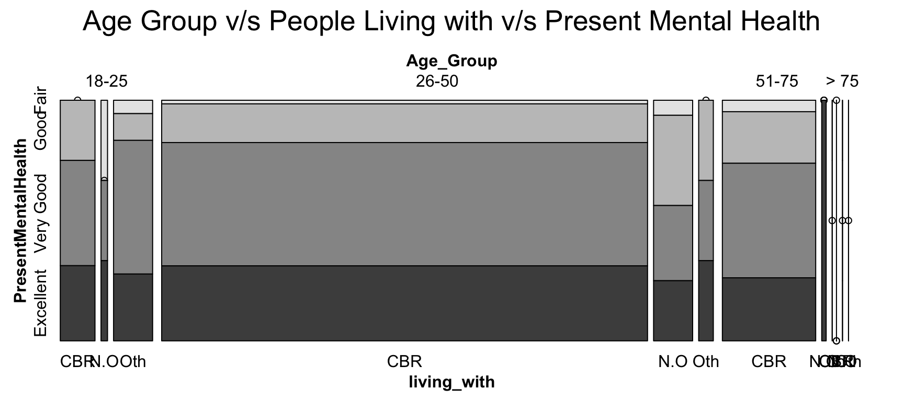
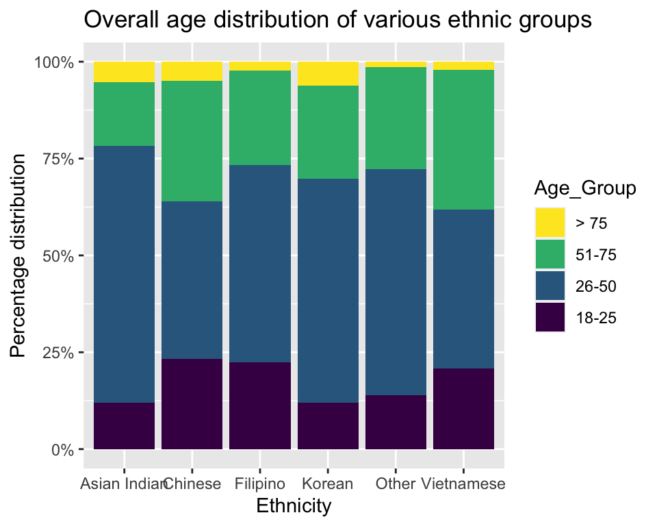
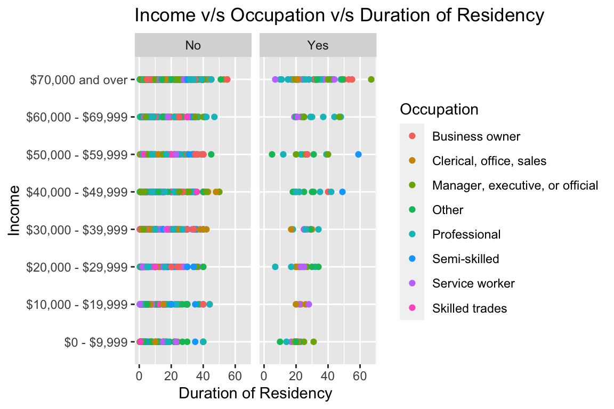
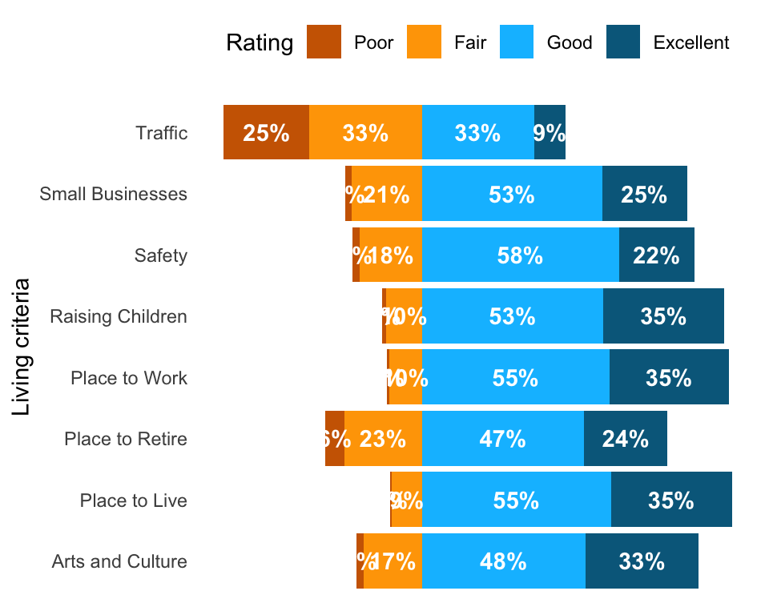
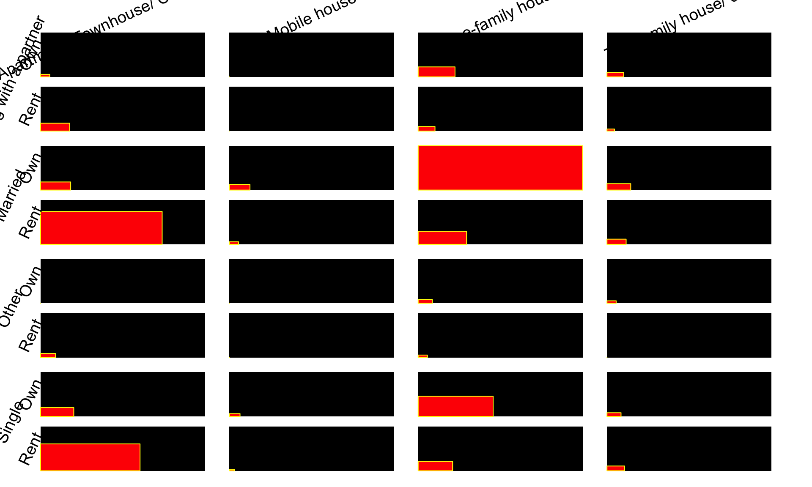
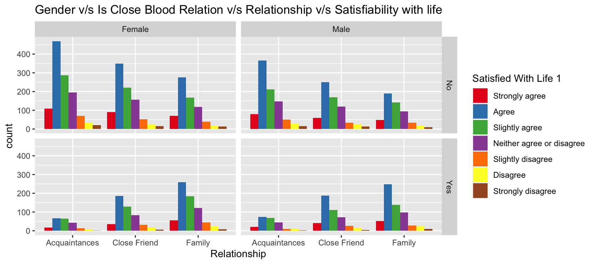
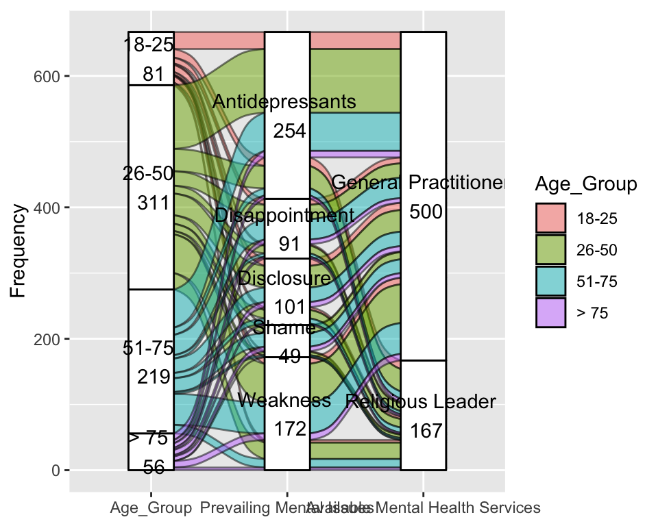
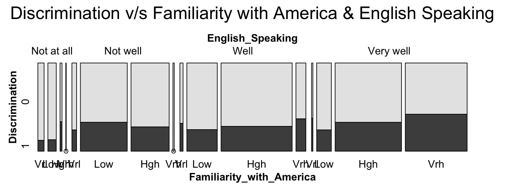
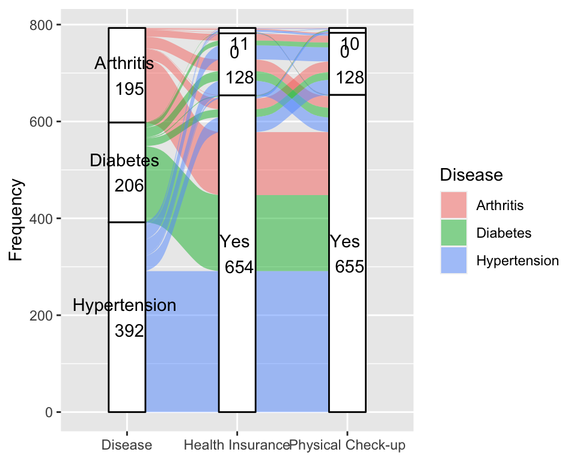
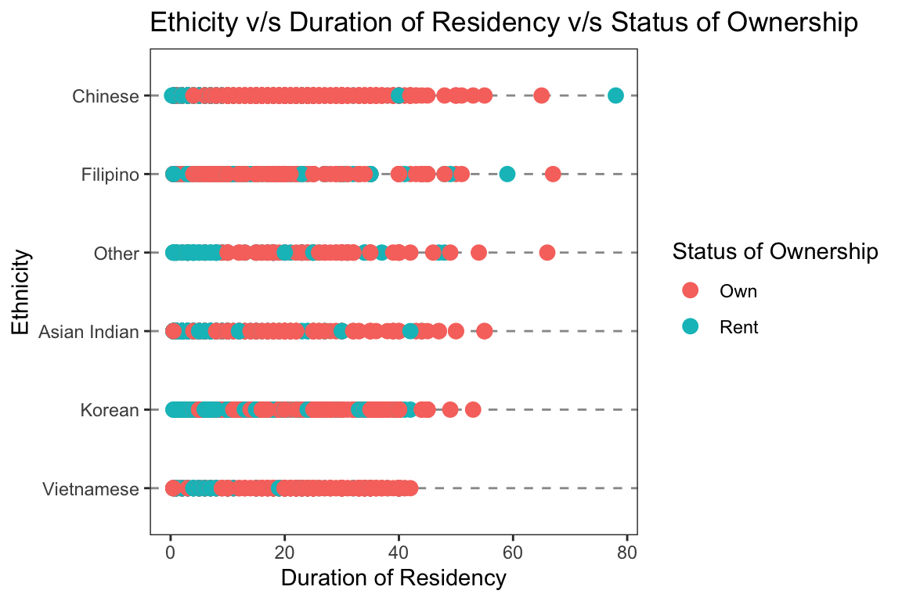

Chapter 4 Results
4.1 Does the people who we are living with have something to do with our mental health?
 Plot 1 is the analysis between age group, present mental health and the person they are living with. Mental health is a serious issue that can range from mild to severe, influencing a person’s thinking, mood, and/or behaviour. As most of the respondents are immigrants, their mental health may have a role in determining their quality of life as they may choose to live away from home. It majorly depends on who they are surrounded by and live with. Along with this characteristic, age group also plays a role in today’s society, with the young constituting the majority. The respondents in the age range of 25 to 50 had the highest number of responses, as shown by the graph, which is also shown in the data People who live close to their blood relatives typically have excellent or very good mental health. In the age group between 18-25 and 25-50 those living with no one and others tend to have a fair mental health which makes sense as this is the age range where people keep working and living with no one can lead to a breach in the mental health. When living alone, many people over the age of 75 report that their mental health is outstanding; yet, when living among close blood relatives, it appears to deteriorate.
4.2 Is the survey unbiased: within each ethnicity, are people of all age brackets covered?

The stacked bar chart serves as an illustration of how to comprehend the distribution of people from various ethnicities in various age groups. The majority of people in the 18–25 age bracket are Chinese and Filipino. In the 25–50 age range, Asian Indians make up the majority. In the age range of 51 - 75, the Vietnamese have a substantial population. Koreans often occupy the most space among those who are older than 75. As was seen in the previous graph, it is clear from this one as well that there are the most immigrants in the 25–50 age range.
4.3 Does the duration of residency in the US have any impact on people’s income?

The level of income earned by different occupations has a significant impact on living quality. Given that the majority of the survey respondents are non-natives, two key criteria that may affect someone in this salary category are whether or not they were born in the US and how long they have been there. An obvious observation is that there are a greater number of people who aren’t US born and the minimum number of years for residency for a US-born is 15 years. The percentage of US citizens with salaries of $70,000 or more is higher among those who were born there, and they also tend to have more years of residency on average than non-citizens. Business owners and professionals typically earn the greatest salaries among abroad born. Those who work as managers, executives & officials, and business owners make the greatest salaries among non-US citizens.
4.4 How good is Austin to live based on different living criteria?

It is crucial to evaluate whether Austin, Texas—in particular—is a decent place to live based on several living characteristics if one is thinking about moving there. The following factors are taken into account in the graph across all age groups: a place to live, a place to raise children, a place to work, small businesses, a place to retire, a place for arts and culture, safety, and traffic. This figure uses a diverging stacked bar chart because it clearly distinguishes between the good and the bad side. The first observation is that most people consider Austin, Texas to be a good place to live based on the fact that maximum number of people are among the good region.
In general, people think Austin is a decent city for safety, employment opportunities, and living conditions. It is regarded as a top-notch location for living, working, and raising a family. We can thus conclude that Austin is a good place in terms of place to live and work because there is overlap between the good and excellent on these terms. Even if the majority of people think the city is a great location to live, there are some that don’t. Most residents believe that traffic is a significant problem and makes life challenging. Others believe that Austin lacks a strong arts and culture scene and isn’t a suitable place to retire.
4.5 Are all combinations of marital status, type of house owned and rental situation equally represented?

The graphic shows the frequency of various combinations of housing type, ownership status (rental or ownership), and marital status. The motive behind this plot is to determine the largest combination. Among all possible combinations the ones who are married occupy a larger chunk showing that those who are married stay in an own one family house. The second most occupied in the combination are the married couple who stay in a rented Apartment/ Townhouse/ Condominium. It can be observed that like the married the singles also prefer to stay either in an owned one family house or a rented Apartment/ Townhouse/ Condominium. The other combinations have few very data.
4.6 Does satisfaction in life depend on relationships with family, close friends and acquaintances?
 Human satisfaction is largely derived from relationships with family, friends, and acquaintances rather than purely worldly things. It makes more sense to have a plot where the residents’ level of life happiness is determined on whether or not they have family, friends, and acquaintances. Depending on the respondent’s gender, the satisfaction may vary because of the range of feelings and connections they experience. The majority of respondents, on average, lack friends, family, and acquaintances and appear to be content with their life. Male and female respondents who had no acquaintances or friends were often the most content with their lives.
Among those with family, friends and acquaintances the ones with family seem to the most satisfied under males and females. Overall, very few people express dissatisfaction, and men and women often follow a similar pattern.
4.7 Does the mental health issue being faced by people in a particular age bracket influence the preferred health service?

A decent place to live and a high quality of life are frequently also characterized by the amenities that are easily accessible to the populace. To lead a life, it is important for people of all ages to be mentally healthy and at peace. Since many people experience mental pressure and need some direction, such facilities were examined in the alluvial plot. The analysis is carried out to determine the prevalence of each type of mental illness among people and the services that are sought by those individuals.
The majority of people between the ages of 25-50 and 51-75 have mental health disorders, with depression being the most common problem, followed by weakness and problems disclosing their condition. Most people who experience weakness are in the 25–50 age range. The majority of people who experience any metal health concern look for a general practitioner’s help. Most respondents in the age range between 18-25 do not seek religious help and those in the 25–50 & 51–75 age ranges are more likely to seek religious therapies.
4.8 Are people “really” discriminated based on their familiarity with America and their fluency in English?
 Discrimination occurs everywhere, and the fact that the respondents are immigrants and frequently have little knowledge of the United States or its language makes it important to plot it and observe. Thus, analysis is done to determine whether knowledge of the language and familiarity with America can contribute to discrimination.
The majority of the respondents do not appear to have experienced any types of discrimination based on if they speak English and on how familiar they are with US. In actuality, the least discriminated against are those who have no familiarity with America and do not speak English. The majority of the respondents appear to be proficient in English. It can be seen that among those who experience discrimination, those who speak very good English and are more familiar with America tend to experience discrimination more frequently than those who are less familiar with America and don’t speak good English or those who speak very good English and are very familiar with it.
4.9 Does a diseased person opt for health insurance in order to undergo a physical checkup?

Plot 9 examines current illnesses, insurance coverage, and physical examinations. The goal of this plot is to determine whether or not the respondents use the various amenities that have been made available to them. The motive is attempting to identify individuals who use health insurance by going to the doctor for a physical health check-up. Most significantly, people who have a prevalent sickness should be taking a health insurance to protect themselves.
The majority of responders have problems with hypertension, and it is evident that almost all of them have insurance, allowing utilizing the services offered. Only a tiny minority of those with insurance do not consider physical check-up, yet the majority regularly check their health. Half of individuals without insurance choose to undergo a physical examination, and half do not.
4.10 Do people prefer to own a house as they consider living in the US for a longer amount of time?

A plot that could give us a picture of which ethnic groups are the most successful in settling will give an idea about the utilities made use of and taken advantage of in proceeding to owning a house for themselves. The plot shows the status of ownership for different ethnic groups based on their duration of residency. An obvious generalization is that the likelihood of obtaining an own home increase with the length of residency. The same is depicted in the plot as well. Those who have lived there for more than 15 to 20 years own a home, whereas those who have only lived there for 10 years or less tend to live in rental properties. Additionally, it’s clear that Chinese and Filipino people have owned homes more quickly than people of other groups.